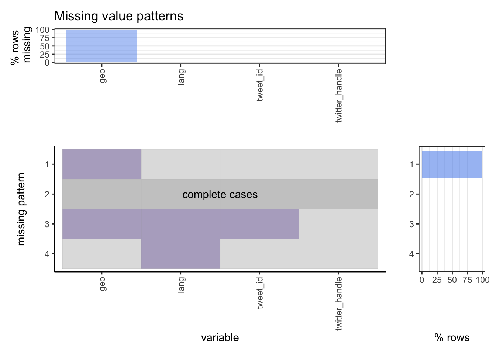
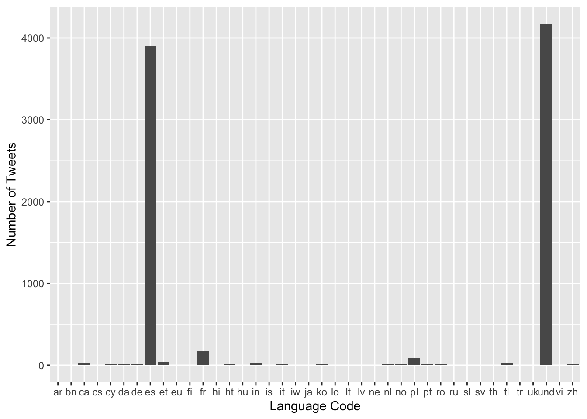
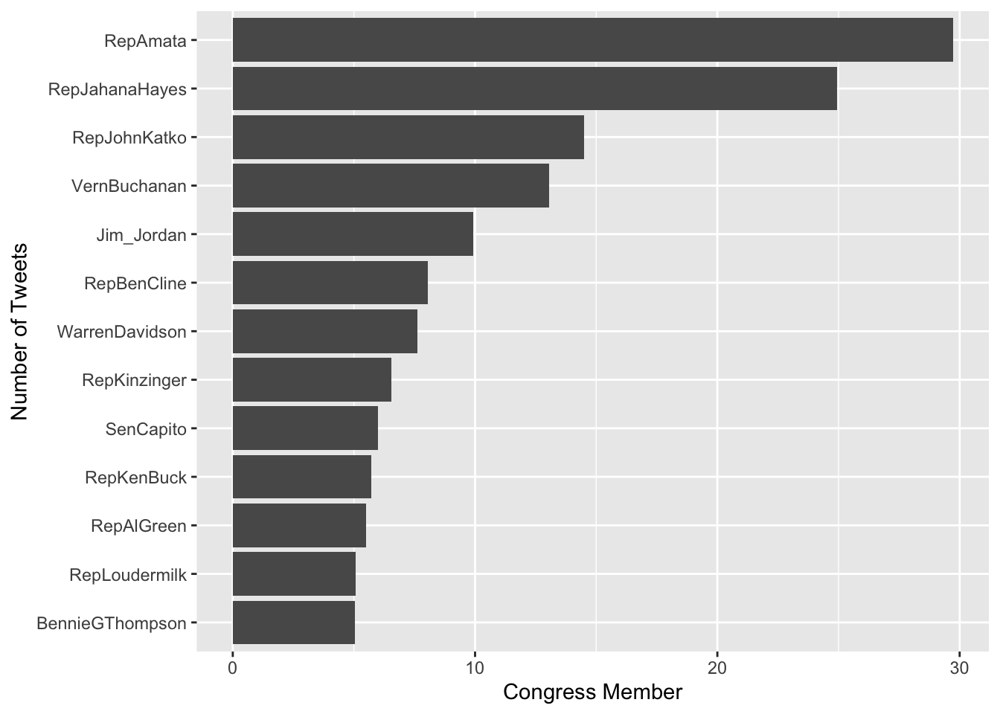
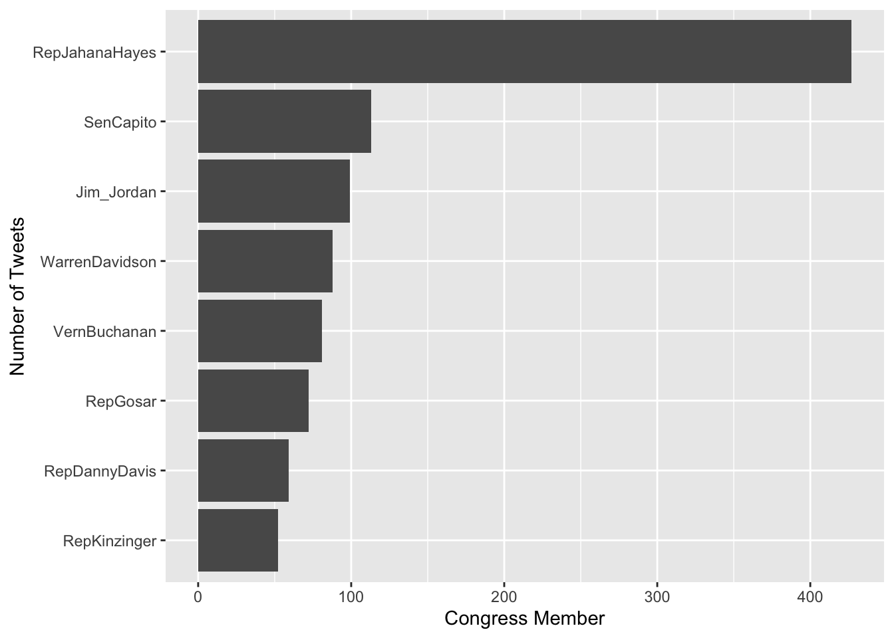

Chapter 4 Missing values

4.1 Excluding Tweet Content from Missing Values
We excluded the column tweet_content because it will naturally have very different values. If we had things like sentiments, annotations, counts of handles, etc that information could be examined for missing values. Since we’re extracting tweets by their id, it is extremely unlikely that a row would not contain the tweet content. As such, there isn’t much to gain by checking for missing values in the tweet_content column. Given the diversity of tweets and congresspeople, it’s likely that any one word, mention, etc is quite sparse across all tweets across all congress members and perhaps even within a single congress member.
4.2 Geo
Prior to extracting the tweets, we didn’t know how many would be geo-tagged. It’s apparent that the majority of tweets are not geo-tagged. The lack of geo tags do not affect the content of our analyses very much since we can make strong assumptions about the location of each senator or representative. We could group congress people by their specific district and constituency, but due to things like gerrymandering this could be an issue. Moreover, this would require us to associate a senator with all districts or no districts.
4.2.1 Impact of Missing Geo Values
The lack of geo-tagged tweets is not a huge issue for our analyses although it would be helpful to confirm assumptions. For example, if we had geo-tagged tweets, we could compare tweets posted outside of the congress member’s state versus tweets posted within a congress member’s state. But alas, we cannot have everything we desire.
4.3 Language
Although much less frequent, the lang column contains a few missing values. When extracting data, Twitter labels those tweets whose language it cannot identify as “und” or undetermined. Typically, these tweets are labeled as such because they only contain URLs, hashtags, emojis, or some combination thereof. Undetermined tweets comprise the plurality of the non-English labled tweets which is interesting. There are even more undetermined tweets than Spanish tweets.

In total 376 people in Congress had tweets labeled as und. however, of those 376, are there any members whose tweets have a significantly higher percentage of tweets labeled as und? There are 13 US Congress members with 5% or more of their tweets labeled und for the language.

Do these members of congress contribute a large portion of total tweets through their tweets labeled as und? Those with the highest proportion of tweets labeled und also tend to have the largest number of tweets labeled und.

4.3.1 Impact of Missing Lang Values
The und values for lang are not necessarily a detriment to our overall analysis especially since they comprise an small proportion of overall tweets. Moreover, other than a few US Congress members, und tweets are not very common. The vast majority have less than 5% of their tweets labeled as und. Additionally, even with these tweets labeled as und, we may still be able to extract meaningful insights from the content of the tweets. The tweets themselves could contain words like COVID, COVID-19, the pandemic, etc. These would still help us understand the relationships between tweets and COVID.
4.4 Other Columns
There are no missing values from the other columns. This is mainly a result of the way the data was extracted. We had known Twitter users in mind and we extracted all their tweets within a specified time domain. Every tweet that could be retrieved has a corresponding identifying number (i.e. tweet_id field is non-empty). This isn’t a problem since it gives us much more information to work with. There are entire fields dedicated to analyzing subsets of linguistic content. From this data we can look at a multitude of features that could be useful to relate to COVID. For example, we can look at the frequency of the words COVID and COVID-19 over time, across congress members, and consequently by region. We have almost 500,000 tweets to analyze so even the simplest features will be useful.
4.5 Number of tweets cases and mobility
We did not encounter any problem with the missing values, indeed, the problem was the opposite, too much data. We were lucky enough to find very high quality data online.